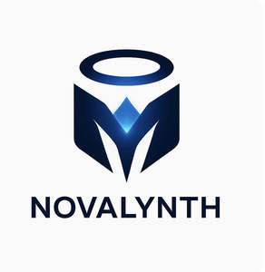

Trade Mark Journal No.2025/019 9 May 2025
UK00004194154 24 April 2025 (9,35,41,42,45)

- Class 9
- AI software; Software platforms to allow users to collect money; Software; Computer software to enable the provision of information via the Internet; Computer software for analysing market information; Computer software for mobile applications that enable interaction and interface between vehicles and mobile devices; Collaboration software platforms [software]; Search marketing software; Computer software packages; Computer e-commerce software to allow users to perform electronic business transactions via a global computer network; Computer software to enable searching and retrieval of data; Computer software for business purposes; Application software; Business application software; Software suites; Software development tools; Networking software; Security software.
- Class 35
- Business consulting; Business consultancy; Business marketing consultancy; Business management consultancy; Business consultancy services; Professional business consultancy; Strategic business consultancy; Business planning consultancy; Business management and organisation consultancy; Business organisation and management consultancy; Business consultancy and advisory services; Business management consultancy and advisory services; Business management consulting; Business organization and operation consultancy; Business process management consultancy; Consultancy and advisory services in the field of business strategy; Consultancy relating to business planning; Business consultancy services for digital transformation; Marketing consultancy; Consultancy relating to business analysis; Consultancy relating to business efficiency; Consultancy relating to business acquisition; Corporate management consultancy services; Business advisory services; Business marketing consultation services.
- Class 41
- Education and training services; Education and training; Training and education services; Education and training consultancy; Computer education training; Education and training in the field of business management; Training courses; Education services relating to business training; Provision of training courses; Instructional and training services; Educational certification services, namely, providing training and educational examination; Training consultancy; Education services; Providing training and educational examination for certification purposes; Consultancy services relating to the development of training courses; Business training; Education courses relating to automation; Training in business skills; Training services concerned with the use of computer software.
- Class 42
- Software as a service [SAAS] services; Consulting services in the field of software as a service [SaaS]; Software consultancy services; Platforms for gaming as software as a service [SaaS]; Hosting services, software as a service, and rental of software; Software engineering services; Software development services; Software as a service [SaaS] featuring computer software platforms for artificial intelligence; Software customisation services; Software as a service [SaaS] featuring software for deep learning; Software as a service [SaaS] featuring software for deep neural networks; Services for the design of computer software; Services for the leasing of computer software; Consultancy services in relation to computer software; Services for designing computer software; Development services relating to computer software application solutions; Advisory services relating to computer software; Computer software technical support services; Research and consultancy services relating to computer software; Installation and maintenance services for software; Consultancy and information services relating to the design, programming and maintenance of computer software; Information technology [IT] support services [troubleshooting of software]; Consultation services relating to computer software; Providing user authentication services using biometric hardware and software technology for e-commerce transactions; Computer software consultancy; Advisory and information services relating to computer software; Programming of software for e-commerce platforms; Development of software solutions for internet providers and internet users; User authentication services using single sign-on technology for online software applications; Consultancy services relating to computer networks using mixed software environments; Design and development of operating software for cloud computing networks; Cloud-based data protection services .
- Class 45
- Computer software licensing [legal services].
NOVALYNTH LIMITED